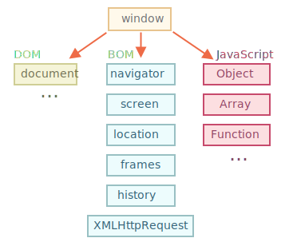

JavaScript 语言最初是为 Web 浏览器创建的。此后，它已经发展成为一种具有多种用途和平台的语言。
平台可以是一个浏览器，一个 Web 服务器，或其他 主机（host），甚至可以是一个“智能”咖啡机，如果它能运行 JavaScript 的话。它们每个都提供了特定于平台的功能。JavaScript 规范将其称为 主机环境。
主机环境提供了自己的对象和语言核心以外的函数。Web 浏览器提供了一种控制网页的方法。Node.JS 提供了服务器端功能，等等。
下面是 JavaScript 在浏览器中运行时的鸟瞰示意图：

有一个叫做 window 的“根”对象。它有两个角色：
例如，在这里我们将它用作全局对象：
function sayHi() {
alert("Hello");
}
// 全局函数是全局对象的方法：
window.sayHi();在这里，我们将它用作浏览器窗口，以查看窗口高度：
alert(window.innerHeight); // 内部窗口高度还有更多窗口特定的方法和属性，我们稍后会介绍它们。
文档对象模型（Document Object Model），简称 DOM，将所有页面内容表示为可以修改的对象。
document 对象是页面的主要“入口点”。我们可以使用它来更改或创建页面上的任何内容。
例如：
// 将背景颜色修改为红色
document.body.style.background = "red";
// 在 1 秒后将其修改回来
setTimeout(() => document.body.style.background = "", 1000);在这里，我们使用了 document.body.style，但还有很多很多其他的东西。规范中有属性和方法的详细描述：DOM Living Standard。
DOM 规范解释了文档的结构，并提供了操作文档的对象。有的非浏览器设备也使用 DOM。
例如，下载 HTML 文件并对其进行处理的服务器端脚本也可以使用 DOM。但它们可能仅支持部分规范中的内容。另外也有一份针对 CSS 规则和样式表的、单独的规范 [CSS Object Model (CSSOM)](https://www.w3.org/TR/cssom-1/)，这份规范解释了如何将 CSS 表示为对象，以及如何读写这些对象。
当我们修改文档的样式规则时，CSSOM 与 DOM 是一起使用的。但实际上，很少需要 CSSOM，因为我们很少需要从 JavaScript 中修改 CSS 规则（我们通常只是添加/移除一些 CSS 类，而不是直接修改其中的 CSS 规则），但这也是可行的。浏览器对象模型（Browser Object Model），简称 BOM，表示由浏览器（主机环境）提供的用于处理文档（document）之外的所有内容的其他对象。
例如：
navigator.userAgent — 关于当前浏览器，navigator.platform — 关于平台（可以帮助区分 Windows/Linux/Mac 等）。这是我们可以如何使用 location 对象的方法：
alert(location.href); // 显示当前 URL
if (confirm("Go to Wikipedia?")) {
location.href = "https://wikipedia.org"; // 将浏览器重定向到另一个 URL
}函数 alert/confirm/prompt 也是 BOM 的一部分：它们与文档（document）没有直接关系，但它代表了与用户通信的纯浏览器方法。
BOM 是通用 [HTML 规范](https://html.spec.whatwg.org) 的一部分。
是的，你没听错。在 <https://html.spec.whatwg.org> 中的 HTML 规范不仅是关于“HTML 语言”（标签，特性）的，还涵盖了一堆对象、方法和浏览器特定的 DOM 扩展。这就是“广义的 HTML”。此外，某些部分也有其他的规范，它们被列在 <https://spec.whatwg.org> 中。说到标准，我们有：
DOM 规范 : 描述文档的结构、操作和事件，详见 https://dom.spec.whatwg.org。
CSSOM 规范 : 描述样式表和样式规则，对它们进行的操作，以及它们与文档的绑定，详见 https://www.w3.org/TR/cssom-1/。
HTML 规范
: 描述 HTML 语言（例如标签）以及 BOM（浏览器对象模型）— 各种浏览器函数：setTimeout，alert，location 等，详见 https://html.spec.whatwg.org。它采用了 DOM 规范，并使用了许多其他属性和方法对其进行了扩展。
此外，某些类被分别描述在 https://spec.whatwg.org/。
请注意这些链接，因为要学的东西太多了，所以不可能涵盖并记住所有内容。
当你想要了解某个属性或方法时，Mozilla 手册 https://developer.mozilla.org/en-US/search 是一个很好的资源，但对应的规范可能会更好：它更复杂，且阅读起来需要更长的时间，但是会使你的基本知识更加全面，更加完整。
要查找某些内容时，你通常可以使用互联网搜索 "WHATWG [term]" 或 "MDN [term]"，例如 https://google.com?q=whatwg+localstorage，https://google.com?q=mdn+localstorage。
现在，我们开始学习 DOM，因为文档在 UI 中扮演着核心角色。